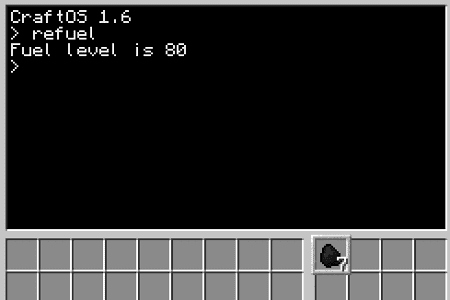
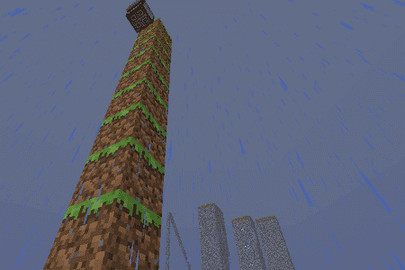

Vi har sett enkle datamaskiner. Nå skal vi leke oss med roboter, og finne ut hvordan vi kan få dem til å gjøre forskjellige ting for oss.
Steg 1: Vår første robot
Vi skal nå bli kjent med roboter og se noe av det de kan brukes til.
En robot er en datamaskin som kan bevege seg. I ComputerCraft kan vi også gi robotene forskjellige verktøy slik at de for eksempel kan grave, bygge, slåss og så videre.
Vi begynner likevel med en helt enkel robot:
Sjekkliste
I Creative Mode finner du også robotene ved å trykke E, deretter > og til slutt velge fanen med datamaskinsymbolet. Robotene heter Turtle i ComputerCraft.
Turtles
Navnet Turtle betyr skilpadde på norsk. Grunnen til at disse robotene kalles skilpadder er historisk. For nesten 70 år siden bygde William Grey Walter et par roboter som kunne bevege seg rundt. Disse beveget seg ganske sakte, og var lave og skallformet. De fikk derfor etterhvert kallenavnet skilpadder.
Senere ble måten disse skilpaddene beveget seg på (vi skal se hvordan snart) tatt inn i forskjellige programmeringsspråk, spesielt som en måte å tegne på. Språket Logo er nok det som er mest kjent for slik skilpaddegrafikk, men nesten alle programmeringsspråk støtter dette i dag, inkludert for eksempel Scratch, Python og ComputerCraft.
Sjekkliste
På samme måte som med datamaskiner starter du roboter ved å høyreklikke på dem. Dette vil starte kommandolinjen til roboten.
Dette viser hvilke programmer denne roboten kjenner til. Hvis du sammenligner med programmene en datamaskin kjenner til vil du se at det er mange av de samme programmene, men at roboten også kan noen ting som datamaskinen ikke kan.
Roboten begynner nå å danse! Trykk Esc-knappen for å stenge kommandolinjen, slik at du ser roboten. Blir du imponert?
Hvis du vil kan du også la roboten fortsette å danse. Lag da en ny robot som du kan bruke i de neste oppgavene.
Steg 2: Roboter og skilpadder
Vi vil nå se hvordan vi kan få robotene våre til å bevege seg rundt.
Som nevnt i boksen Turtles ovenfor beveger vi robotene våre på en måte som ligner slik noen spesielle skilpadderoboter ble kontrollert for nesten 70 år siden. Dette gjør vi ved å bruke programmet go for å bevege robotene rundt.
Sjekkliste
Roboter bruker fuel for å bevege seg. De kan bruke stort sett samme materiale som en Furnace som fuel, for eksempel er Coal eller Blaze Rod fine å bruke.

Legg merke til at en kull blir borte fra robotens inventory. Roboten svarer også ved å fortelle om sin fuel level. Dette tallet forteller hvor langt roboten kan bevege seg før den går tom for fuel igjen.
Roboten vil nå spise opp alt kullet, og deretter rapportere at den er klar til å gå ganske så langt!
Flytter roboten din seg? Det kan være litt vanskelig å se hva som er fram og bak på en robot. Et triks kan være å tenke på den lange, smale sprekken som øynene til roboten. Altså at den siden med sprekken er foran.
Finne hjelp
Datamaskiner og roboter har et innebygd hjelpesystem. For å se hvordan det virker kan du skrive help og trykke enter. Dette gir deg en rask introduksjon til nyttige hjelpekommandoer. Legg merke til at du kan skrive help <program> for å få hjelp om et spesielt program. Da må du bytte ut <program> med navnet på programmet. For eksempel kan du skrive help go for å se hjelp om go-programmet.
Det finnes selvsagt også en del hjelp på Internett. Et bra sted å starte er ComputerCraft Wiki'en: http://computercraft.info/wiki/.
Sjekkliste
Dette viser oss at vi kan bruke go forward, go back, go up, go down, go left og go right for å flytte roboten rundt. I tillegg ser vi at vi kan bruke tall for at roboten skal flytte seg flere steg.
Hvordan kan vi få roboten til å bevege seg sidelengs?
Hva skjer dersom du ber roboten gå gjennom bakken, gjennom en vegg, eller om du står i veien for roboten?
Steg 3: Gruverobot
Hvis vi gir roboter de riktige verktøyene kan de grave, bygge og slåss for oss.
Vi skal nå bruke en gruverobot som kan grave for oss.
Sjekkliste
Skriv excavate 3 og trykk enter.
Ta et steg tilbake og se på mens roboten graver. Roboten vil fortsette å grave til den går tom for fuel eller kommer til grunnfjellet, Bedrock.
Når roboten er ferdig å grave kommer den tilbake dit den startet. Der gir den fra seg alt materialet den har gravd ut slik at du kan plukke det opp om du vil.
Steg 4: Robotprogrammer
Vi skal nå lære hvordan vi kan kontrollere roboter i våre egne programmer.
Når vi skriver egne programmer som styrer robotene bruker vi kommandoer fra turtle-biblioteket.
Sjekkliste
Du får nå se en ganske lang liste med kommandoer som vi kan bruke. Vi vil vise frem noen av disse. Du burde teste alle sammen på egen hånd, og se om du skjønner hvordan alle sammen virker.
Husk at du kan trykke Esc-knappen for enklere å se hva roboten gjør. Høyreklikk på roboten for å komme tilbake til Lua-tolkeren.
Lag en liten kloss litt unna roboten din, omtrent som på bildet under. Klarer du å bruke turtle-kommandoene over til å plassere roboten på toppen av klossen?
Steg 5: Up, up, up, and away ...
Kan vi klare å få roboten til å bygge for oss?
Et av poengene med roboter er at de kan gjøre arbeid for oss. I Minecraft betyr det at vi vil at robotene skal kunne for eksempel grave eller bygge.
Sjekkliste
Bygde roboten en gresskloss foran seg? Da har du gjort alt riktig. Hvis dette ikke skjedde kan du sjekke
1: at du har startet lua,
2: at roboten har fuel,
3: at roboten har byggemateriale,
4: at det ikke står noe foran roboten (husk at den smale sprekken er øynene til roboten), og
5: at boksen med byggemateriale i robotens inventory er merket, det vil si at den har en litt tykkere ramme rundt seg enn de andre boksene.
Du skal få svaret true som betyr at roboten ser at den har noe foran seg.
Siden roboten nå ikke har noe rett foran seg får du svaret false.
I Steg 6 skal vi se hvordan vi kan bruke place() og detect() sammen for å lage en ganske smart byggerobot.
Men først, en ting vi så når vi brukte go var at hvis vi ville at roboten skulle gå flere steg kunne vi bare skrive et tall, for eksempel go forward 3. Det samme fungerer ikke med turtle-biblioteket. I stedet må vi bruke løkker.
Sjekkliste
Skriv for i = 1, 5 do turtle.back(); end i Lua-tolkeren.
Flytter roboten din seg 5 steg bakover?
Prøv for i = 1, 5 do turtle.back(); turtle.place(); end.
Skriv for i = 1, 60 do turtle.up(); turtle.place(); end.

Men oops! Vi glemte å fortelle roboten at den skulle komme ned når den blir ferdig med å bygge. Hvordan skal vi få tak i den igjen?
Steg 6: Bygg en trapp
Kan vi skrive et program som kan hjelpe oss til å hente ned den forsvunne roboten?
Når vi skal gjøre ting som er litt kompliserte er det som regel enklere å skrive et program, i stedet for å bare gi enkeltkommandoer i Lua-tolkeren. La oss prøve å lage et program som kan bygge en trapp opp til toppen av det høye tårnet.
Før vi begynner på utfordringen det er å bygge en kjempehøy trapp, la oss øve oss, og teste programmet på et mindre tårn.
Sjekkliste
turtle.detect()
Lagre og avslutt ved å bruke Ctrl-tasten.
Vi kan bruke detect til å finne toppen av tårnet.
while turtle.detect() do
turtle.up()
end
Lagre og kjør programmet ditt. Klatrer roboten til toppen av det lille tårnet?
Utvid programmet ditt slik:
while turtle.detect() do
turtle.up()
endwhilenot turtle.detectDown() do
turtle.down()
end
Vi sier at så lenge roboten ikke har en kloss under seg kan den ta et steg ned. Kommer roboten ned igjen når du kjører programmet?
while turtle.detect() do
turtle.up()
endwhilenot turtle.detectDown() do
turtle.down()
turtle.back()
turtle.place()
end
Virker det? Lager roboten en trapp?
Pass på at roboten fortsatt har nok fuel, og fyll opp med byggemateriale. Kjør den bort til det høye tårnet, og la den byggtrapp!
Gratulerer! Du har nå programmert en robot! Legg merke til at siden byggtrapp-programmet vårt bruker detect-kommandoer kan det bygge trapper opp alle slags tårn og bratte fjellsider!
Funnet en feil? Kunne noe vært bedre? Hvis ja, vennligst gi oss tilbakemelding ved å lage en sak på Github eller fiks feilen selv om du kan. Vi er takknemlige for enhver tilbakemelding!
 Robotinvasjon
Robotinvasjon Sjekkliste
Sjekkliste